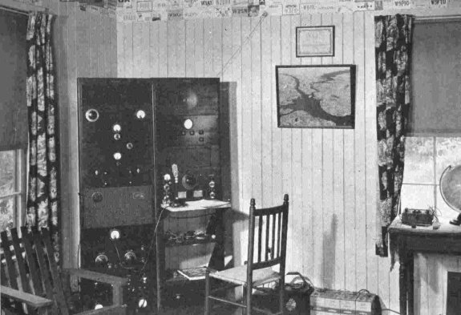

|
These
pictures are of the ham station that James Millen operated in
the late 30's. Photographs were obtained from the book "Notes
on Amateur Radio Transmitter Design" that was compiled by
Jim and published in 1937. I was fortunate to obtain an original
copy of the book that was sent to the editorial department of
Radio-Craft magazine in 1937. I even have the letter
that was sent to Radio-Craft along with the book. The station
equipment still exists today at the Museum
Annex of the Antique Wireless Association in Bloomfield, NY.
For a detailed description of this see the article "W1HRX-A
Ham's Paradise" located elsewhere on this website.
A Picture of the famous "hilltop" bungalow that
housed the amateur radio station. In the center clearing
you can see the 34 foot tower that holds the 20 meter wire
beam array. Also noticeable on the left side is the smaller
tripod mounted 5 meter beams that Millen used in experiments
with the ARRL staff in Hartford some 128 miles away.
|
A full view of the inside of the bungalow. The unit on the
left is a high power transmitter/amplifier that is link
coupled to a low power exciter located in the main operating
position on the right (described below).
|

The main operating position at W1HRX in the late 30's. Just
above the small operating desk is an early National HRO
receiver. To it's left is the complete low-power transmitter/exciter
using a pair of RK-20's in push-pull final. |
|